Welcome to Bittanto. We are going to explore
Bittanto package. Unzip the packag you will
get 3 sub folder Documentation,
Bittanto_Multipage.zip & Bittanto_Onepage.zip.
Bittanto_Multipage.zip & Bittanto_Onepage.zip is your main file.
Lets explore it.
Bittanto_Multipage.zip Unzip the
Bittanto_Multipage you will get 2 sub folder ->
dark and light version, Lets
explore it.
Folders ->
-
assets -> assets folder contains 4 more
sub folder.
-
css -> All CSS plugins, frameworks
& custom css files.
- fonts -> Used icon fonts.
-
images -> Logo, Favicon & other
used images are here.
-
js -> All third party
JS plugins and custom js files are here.
-
ajax -> This folder contain 2 php file
folio and contact email functionalities. We will describe it under
PHP section.
Files ->
- 1 Home page.
- 1 Blog page.
- 1 Blog Details page.
- 1 Portfolio page.
- 1 Portfolio Details page.
- 1 Resume page.
- 1 Contact.
Bittanto_Onepage.zip Unzip the
Bittanto_Onepage you will get 2 sub folder
-> dark and light version, Lets
explore it.
Folders ->
-
assets -> assets folder contains 4 more
sub folder.
-
css -> All CSS plugins, frameworks
& custom css files.
- fonts -> Used icon fonts.
-
images -> Logo, Favicon & other
used images are here.
-
js -> All third party
JS plugins and custom js files are here.
-
ajax -> This folder contain 2 php file
folio and contact email functionalities. We will describe it under
PHP section.
Files ->
- 1 Home page.
- 1 Blog Details page.
- 1 Portfolio Details page.
Lets start how to customize Bittanto. Its easy to
customize.
Head ->
There are 1 pre define header style available. You just need to
choose your once. Copy it and paste it to your html file. Some basic
informations & codes are shown bellow.
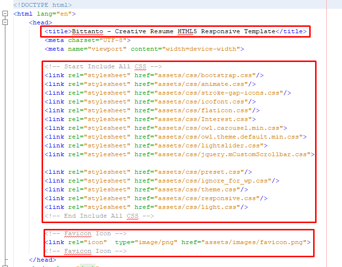
This is Head part. Site title, CSS links & Favicon can be
changed here.
Preloader ->
Disable or enable preload if you want.
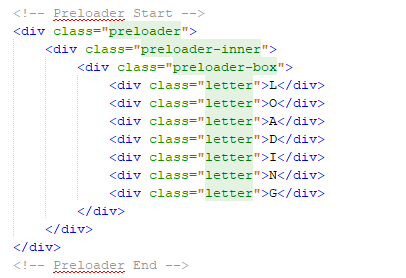
Header ->
I am going to show you header style.
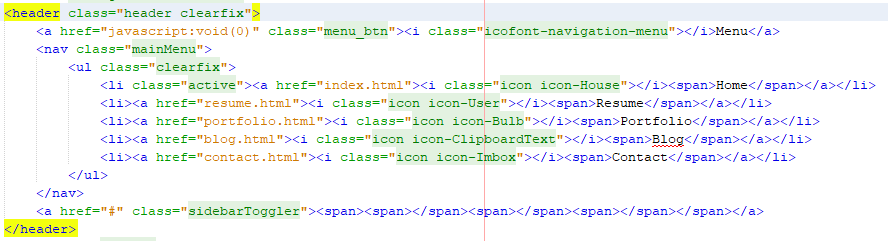
Footer ->
There are 1 footer style available.I am going to show you code here.
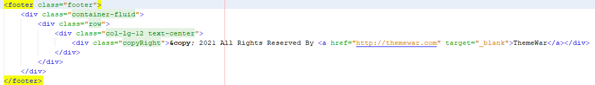
Footer Scripts ->
Before boody closing tab we linked lots of JS plugins and
Bittanto custom js file. Dont remove any one untill you 100%
sure about it. Otherwise site will face JS error & that can be
prevent site loading.
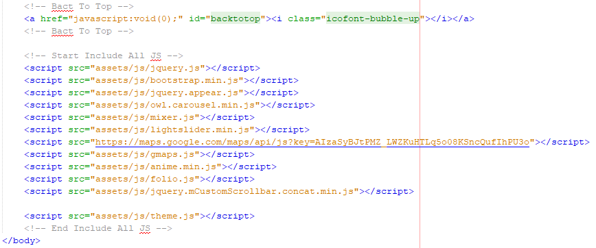
As you know HTML & CSS modification is not rocket science. But
still i am here. If you need any kind of assistance please mail me
at expjoomworker@gmail.com.
We'r using 5 main CSS files in this template
Path -> css/preset.css
The first one is a generic reset file preset.css. Many browser
interpret the default behavior of html elements differently. By
using a general preset CSS file, we can work round this. This file
also contains some general styling, such as anchor tag colors,
font-sizes, etc. Keep in mind, that these values might be overridden
somewhere else in the file.
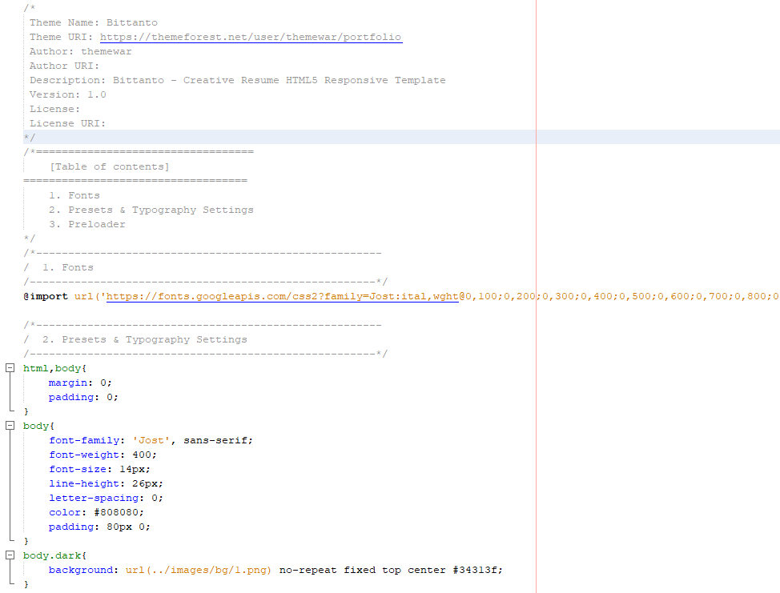
Path -> css/theme.css
The second file contains all of the specific stylings for the page
named theme.css. The file is separated into sections using comment.
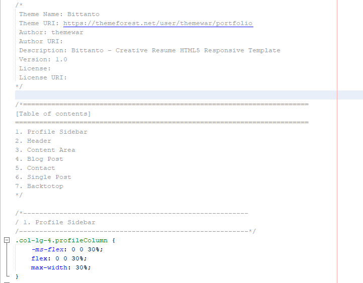
Path -> css/responsive.css
And third file is for maintain responsiveness of the theme named
responsive.css. The file separated with media queries.
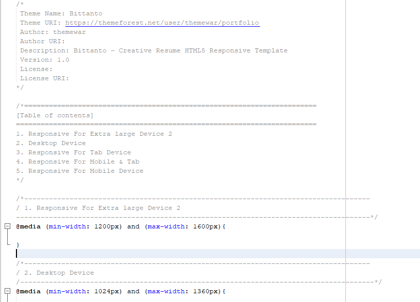
Path -> css/ignore_in_wp.css
If you are want to convert this HTML into any CMS or any other
platform then you can ignore this css file. Some extra code are
written here those are not need in any cms development. Also you can
keep it. Its up to you now.
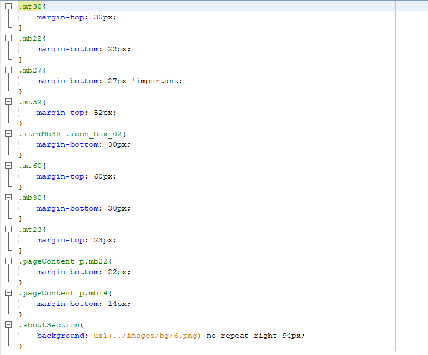
Path -> css/light.css
If you are want to convert this Dark varsion into Light version then
you can used light.css file. Some extra code are written here those
are need in light version css.
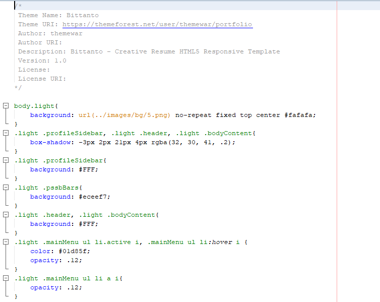
We used losts of JS third party plugins. Here in Bittanto we
write custom script in one file
named theme.js. File locate under js/ folder.
We are going to show you some important part of
our theme.js file.
Owl Carousels ->
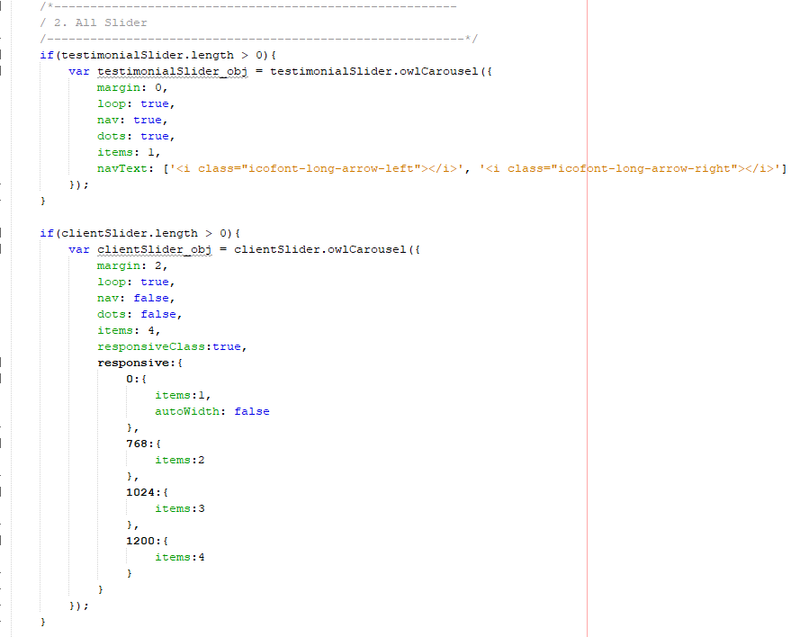
Folio Ajax ->
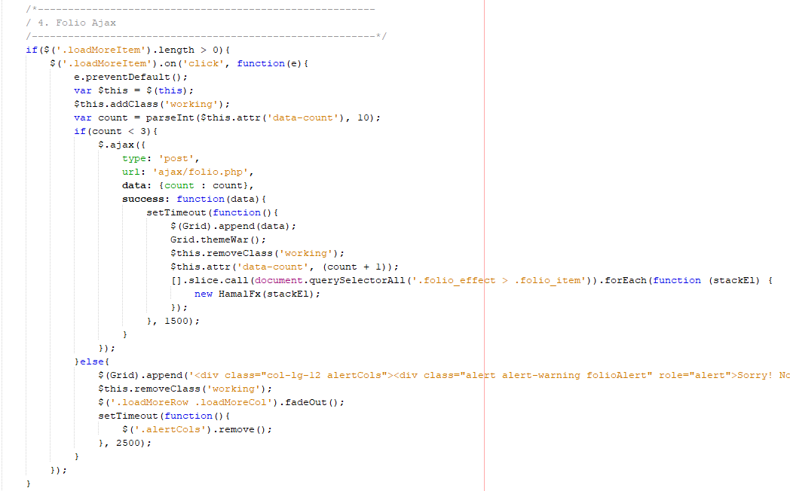
Contact Form Submission ->
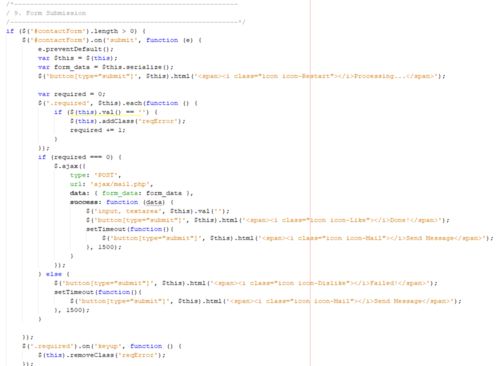
2 php file availabler here. Its for mailing and folio item.
mail.php
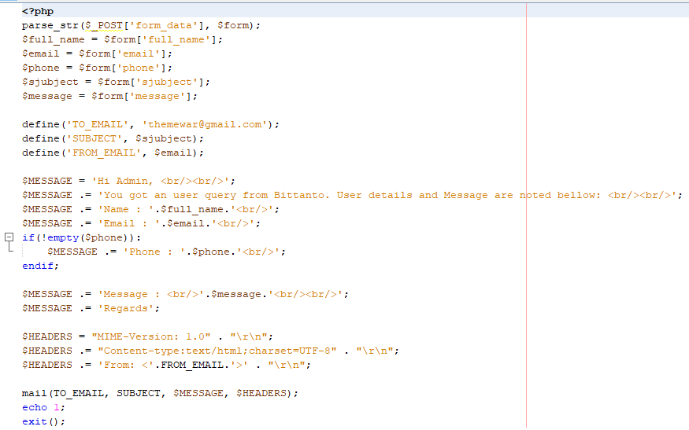
folio.php
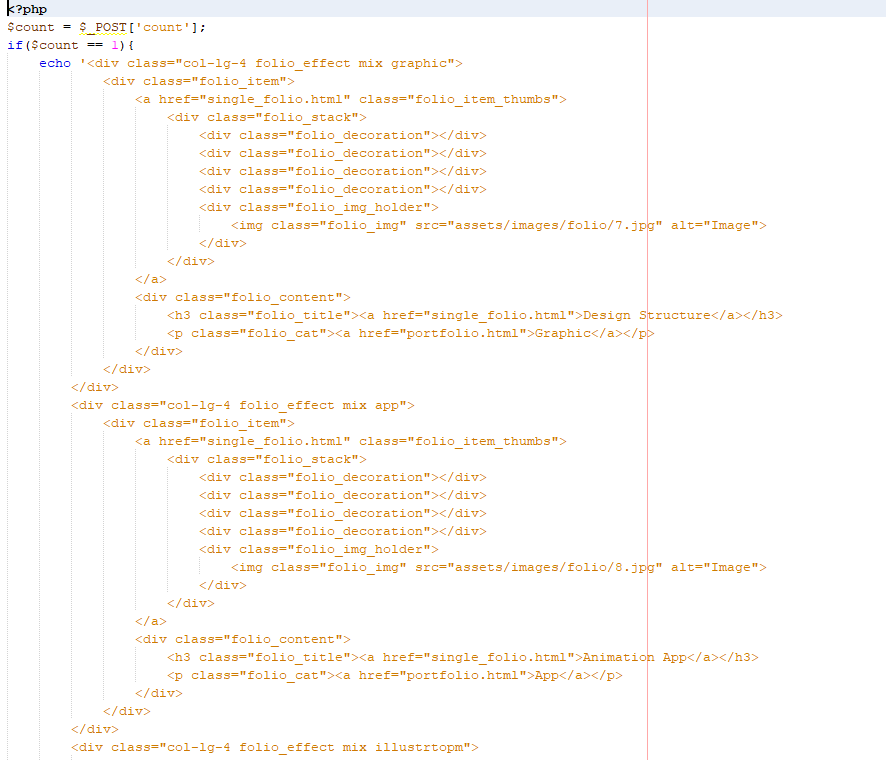
CSS Plugins ->
- Animate CSS
- Bootstrap
- Flat Icons
- Stroke-gap-icons
- Lightslider
- mCustomScrollbar
JS Plugins ->
- Bootstrap
- folio
- Gmaps
- countdown
- Anim Js
- Jquery Appear
- Owl Carousels
Once again, thank you so much for purchasing this product. As I said
at the beginning, I'd be glad to help you if you have any questions
relating to this theme. If you have a more general question
relating to the themes on ThemeForest, you might consider visiting
the forums and asking your question in the "Item Discussion"
section.